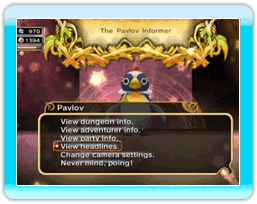

24
|
Andere installaties |
 |
Er zijn talrijke elementen om je te helpen je koninkrijk te besturen.
● Pavlov  Deze prikkelbare pinguïn volgt de koning overal en geeft hem toegang tot bepaalde informatie over kerkers, het profiel van de avonturiers, het nieuws uit het koninkrijk en andere nuttige gegevens. Dankzij het optiemenu kan je met Pavlov de verschillende parameters veranderen die de camera besturen. ● Chime's Tavern (Herbeg van Chime)  Je kunt je eigen groep avonturiers creëren door deze herberg te bezoeken. U kunt ook de vooruitgang van groepen in ware tijd bekijken. ● Mogiosh's Lookout Tower (Wachttoren van Mogiosh)  Praat met Mogiosh bij de ingang van de wachttoren om die tot het hoogste punt te beklimmen en om een beter uitzicht op je koninkrijk te hebben. Praat met Mogiosh bij de ingang van de wachttoren om die tot het hoogste punt te beklimmen en om een beter uitzicht op je koninkrijk te hebben.Mogiosh heeft ook nuttige informatie over gebouwen en andere onderwepen die het koninkrijk betreffen. Spreek met hem als je hulp nodig hebt. |
 |
 |
 |